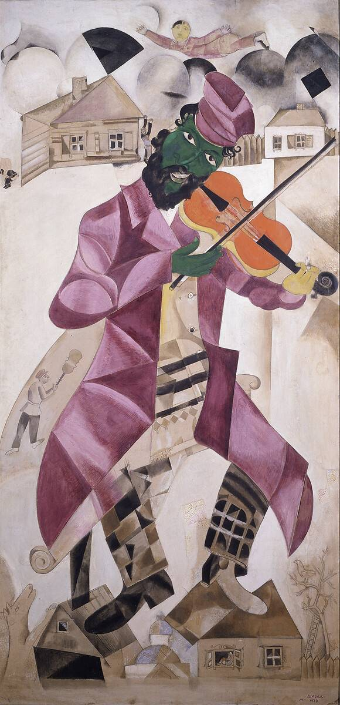

-French Art-

- Famous/Renowned: Yes
- Artist: Paul Cézanne
- How will it help?:
- Describe the simple life moment,,
-
and great for simulating dialogue practice. Utilise new sentence.
-
structure like "Il semble que..." to guess their emotions too! Emulate the painting with a friend!
- Style: Post-Impressionism
- Skills it will improve: Writing, Cultural Awareness, Speaking, Listening

- Famous/Renowned: Yes
- Artist: Marc Chagall
- How will it help?:
- Creatively storytell with the painting's dreamlilke imagery!
-
Grammar Tip: Use "si" (if) and the imparfait (imperfect past tense) to tell your story!
-
Plus, for an extra challenge, try talk about why Chagall used these symbols!
- Style: Surrealism
- Skills it will improve: Writing, Speaking, Cultural Awareness

- Famous/Renowned: Yes
- Artist: Jacques-Louis David
- How will it help?:
- The famous Napoleon's coronation as emporer. Practice your past tenses and description skills, along with some
-
fun research into who was Napoleon. Utilise passé composé and imparfait!
- Style: Neoclassicism
- Skills it will improve: Writing, Cultural Awareness, Reading, Speaking, Listening